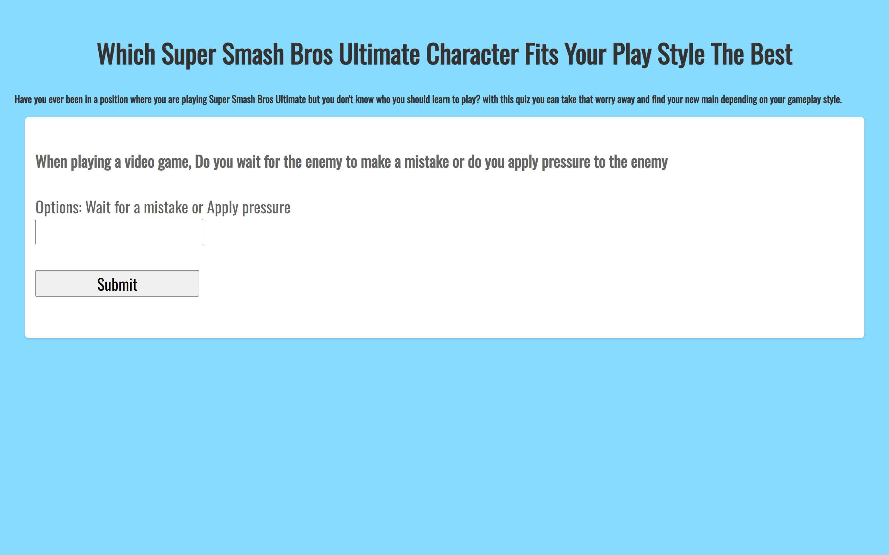
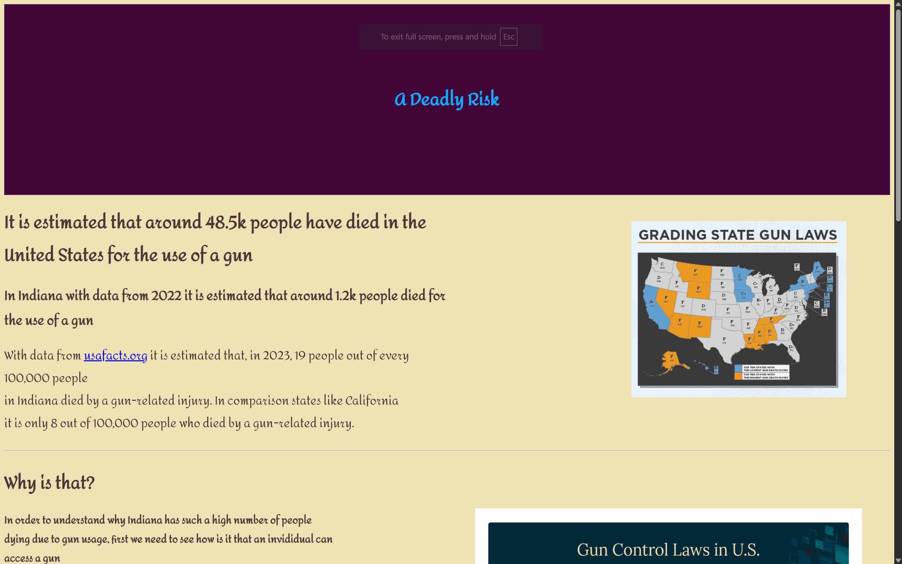
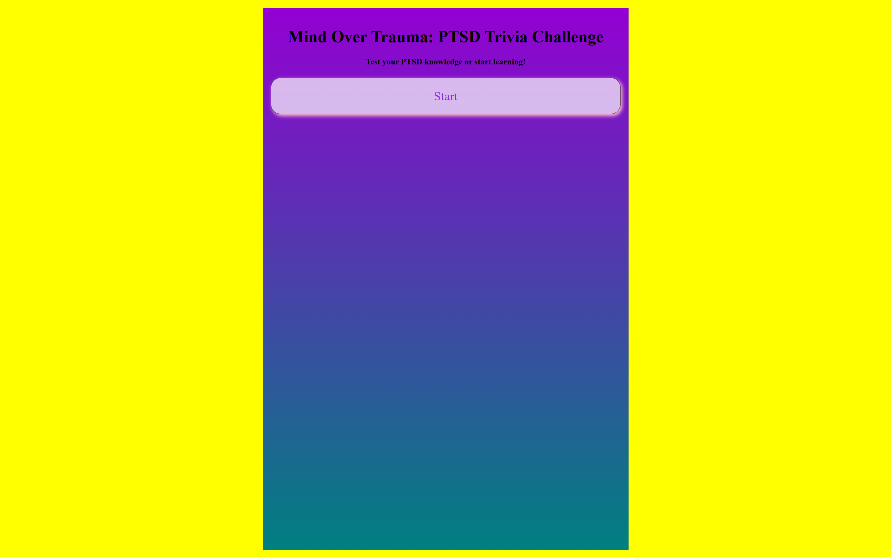

Be ready to find all the secrets

Hello, my name is William Rodriguez Cortez and I'm from El Salvador, I moved to the United States around 2 years ago. Some of the things I like are cats, hearing music, and coding. Something I also enjoy is making something unique just like this website.
Recently I've been doing the Nextech Catapult program, a summer internship that consists of teaching the younger generation coding skills that will be useful for later on in their coding career, outside of that I also decided to take summer classes so now I'm doing AP Government & Politics and AP Macroeconomics.


This is a project I did on the Catapult program, it took me some time to make the code how I wanted it to be. It was our first project using Javascript so I decided to challenge myself by making the end screen change depending on the final score that the user gave.
This is my AP Computer Science Principle portfolio needed for the AP exam, It took me a while to code because I decided to choose the harder of the two option, that being using a text langugage instead of block based language. In the end I like how I left the project and I would spend more time to adjust some of the code.
First project I did on the Catapult program, this one was only using HTML and CSS and it took me a while because of I didn't fully understand how to use CSS but I like the end result of the program.
This project was made with colaboration of the iDEW program. This was one of my favorites projects because of two reasons: First being that I met one of my best friends via this project. I don't claim I did this project on my own at all , she helped me a lot for this project with her ideas and everything. Second thing I liked about this project is how purple has become one of my favorite colors, it just looks good on most stuff.
As previously stated, I moved to the United States at around 2 years ago and it has changed who I am, Before whenever someone would ask me what I wanted to do with my life I would answer I don't know; It would overwhelm me to think of what I have to do for my future, However now that I moved from that mentality I have something to say, I tend to get scared of what is next on my life but it doesn't stop me now. Being in the US has allowed me to find who I am and what it means to live your life. I have many stories I could talk about it would go until the blue sky turned gray. If you wish to talk more with me look for my contact information below.
I learned some basic coding languages such as HTML, CSS, Javascript, etc. At school they also taught me some other coding languages such as Block based coding, Python, SQL, and soon I'll learn Java.
SELECT * FROM colorMeaning WHERE color == ;
>
Part of my life has been focusing around having a twin, which people have seen as a benefit but this also has caused some internal conflicts with myself and those around me. But something I overlooked by accident is just how much I enjoy having a twin. While at times it can get annoying, its honestly something i that also makes me unique. I left some clips I've done with my twin on this part because its symbolic for me in a way, before I saw those memories as foggy because of them being made with him, but now that I start to appreciate who he is on my life those colorless memories have color now.